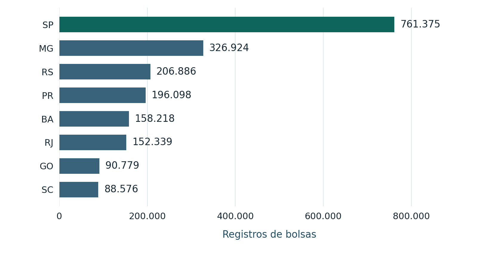

1. Introdução
Instituído pela Lei nº 11.096/2005, o ProUni é uma política pública de acesso ao ensino superior que concede bolsas em instituições privadas. A distribuição das concessões ao longo do tempo, entre territórios e por modalidade ajuda a descrever o alcance observado do programa nos seus primeiros 15 anos. Nesta análise, a unidade de observação é o registro de concessão de bolsa presente no CSV.
- RQ1 Como evoluiu o total anual de bolsas registradas entre 2005 e 2019?
- RQ2 Como as bolsas se distribuíram entre regiões e unidades federativas associadas aos beneficiários?
- RQ3 Como variou a participação da EaD no total anual de concessões?
2. Metodologia e pipeline de dados
A fonte institucional é o Ministério da Educação (MEC). O arquivo prouni_2005_2019.csv, da compilação de Leo Farhat no Kaggle (versão 1), é a entrada efetivamente analisada. O pipeline valida o SHA-256 do CSV e lê cinco das 16 colunas em blocos de 150 mil registros, utilizando pandas, codificação UTF-8 e vírgula como separador.
O tratamento remove espaços nas extremidades e valida ano, modalidade, tipo de bolsa e UF. A região é derivada da UF e comparada com o campo original. Houve 402 registros sem UF e sem região, classificados como “Não informada”, com 0 divergências entre as regiões preenchidas e as derivadas. Os registros sem UF entram nas métricas nacionais e saem dos denominadores por região ou estado. O pipeline não seleciona campos como CPF mascarado e data de nascimento.
A agregação por ano, UF, região, modalidade e tipo gerou 1.629 grupos e preservou o total de registros. As linhas foram mantidas na contagem porque a distribuição não fornece um identificador único de concessão. Cada percentual de EaD usa o total do ano como denominador. A dispersão anual é medida pelo intervalo interquartil (IQR), com inspeção de valores atípicos pelo critério de 1,5 × IQR. A associação temporal é descrita pela correlação de Spearman entre os postos do ano e os da participação anual de EaD.
normal = normalize(chunk, audit)
totals.update(normal.groupby(KEYS, sort=False).size().to_dict())Trecho de src/etl.py. Cada bloco contribui para a contagem acumulada por combinação de categorias.
3. Resultados e discussão
RQ1 Evolução anual das concessões
O total passou de 95.629 para 225.555 registros entre 2005 e 2019, uma alta de 135,86% entre os extremos. O pico ocorreu em 2015, com 252.650 bolsas. Em 2019, a contagem caiu 6,42% em relação a 2018, evidenciando oscilações mesmo após os anos de maior crescimento.
Total de bolsas por ano
A mediana anual foi de 176.764 bolsas. Os quartis Q1 e Q3 ficaram em 138.677 e 231.095,5, com amplitude interquartil de 92.418,5. Pelo critério adotado, nenhum ano foi sinalizado como atípico. Bolsas integrais representaram 69,70% do acumulado. A categoria histórica “Complementar 25%” soma 2.330 registros, todos em 2008.
Ver tabela anual de bolsas e modalidades
| Ano | Total | Presencial | EaD | % EaD |
|---|---|---|---|---|
| 2005 | 95.629 | 90.861 | 4.768 | 4,99% |
| 2006 | 109.025 | 102.769 | 6.256 | 5,74% |
| 2007 | 105.574 | 94.384 | 11.190 | 10,60% |
| 2008 | 124.621 | 110.711 | 13.910 | 11,16% |
| 2009 | 161.369 | 136.553 | 24.816 | 15,38% |
| 2010 | 152.733 | 131.466 | 21.267 | 13,92% |
| 2011 | 170.766 | 145.639 | 25.127 | 14,71% |
| 2012 | 176.764 | 144.099 | 32.665 | 18,48% |
| 2013 | 177.326 | 136.701 | 40.625 | 22,91% |
| 2014 | 223.598 | 177.536 | 46.062 | 20,60% |
| 2015 | 252.650 | 203.494 | 49.156 | 19,46% |
| 2016 | 239.262 | 191.397 | 47.865 | 20,01% |
| 2017 | 236.636 | 184.397 | 52.239 | 22,08% |
| 2018 | 241.032 | 183.702 | 57.330 | 23,79% |
| 2019 | 225.555 | 158.305 | 67.250 | 29,82% |
RQ2 Concentração geográfica
Entre os 2.692.138 registros com UF identificada, o Sudeste concentrou 47,89%. São Paulo liderou o ranking, com 761.375 bolsas (28,28%). São Paulo, Minas Gerais e Rio Grande do Sul, juntos, responderam por 48,11% dos registros com UF. O Sul (18,26%) e o Nordeste (18,08%) ficaram próximos em volume acumulado.
UFs com mais registros de bolsas

O indicador mede volume absoluto por UF associada ao beneficiário. Para comparar cobertura ou acesso entre estados, seria necessário combinar as contagens com denominadores comparáveis, como a população elegível. A UF do beneficiário também pode diferir da localização da instituição de ensino.
Ver tabelas por região e UF
| Região | Bolsas | Participação |
|---|---|---|
| Sudeste | 1.289.321 | 47,89% |
| Sul | 491.560 | 18,26% |
| Nordeste | 486.819 | 18,08% |
| Centro-Oeste | 247.089 | 9,18% |
| Norte | 177.349 | 6,59% |
| UF | Região | Bolsas | Participação |
|---|---|---|---|
| SP | Sudeste | 761.375 | 28,28% |
| MG | Sudeste | 326.924 | 12,14% |
| RS | Sul | 206.886 | 7,68% |
| PR | Sul | 196.098 | 7,28% |
| BA | Nordeste | 158.218 | 5,88% |
| RJ | Sudeste | 152.339 | 5,66% |
| GO | Centro-Oeste | 90.779 | 3,37% |
| SC | Sul | 88.576 | 3,29% |
| PE | Nordeste | 73.834 | 2,74% |
| DF | Centro-Oeste | 72.583 | 2,70% |
| MA | Nordeste | 66.257 | 2,46% |
| CE | Nordeste | 65.433 | 2,43% |
| PA | Norte | 60.452 | 2,25% |
| ES | Sudeste | 48.683 | 1,81% |
| AM | Norte | 44.937 | 1,67% |
| MT | Centro-Oeste | 41.906 | 1,56% |
| MS | Centro-Oeste | 41.821 | 1,55% |
| RN | Nordeste | 33.709 | 1,25% |
| RO | Norte | 31.138 | 1,16% |
| PB | Nordeste | 28.388 | 1,05% |
| PI | Nordeste | 24.739 | 0,92% |
| SE | Nordeste | 20.824 | 0,77% |
| AL | Nordeste | 15.417 | 0,57% |
| TO | Norte | 14.416 | 0,54% |
| AC | Norte | 11.292 | 0,42% |
| AP | Norte | 9.561 | 0,36% |
| RR | Norte | 5.553 | 0,21% |
RQ3 Participação da EaD
A participação anual da EaD cresceu de 4,99% em 2005 para 29,82% em 2019, um ganho de 24,83 pontos percentuais. A maior participação ocorreu em 2019 (29,82%). No acumulado, foram 500.526 registros de EaD, equivalentes a 18,59% do total.
Participação da EaD nas bolsas anuais
A correlação de Spearman entre ano e participação da EaD foi de 0,943 nas 15 observações anuais, indicando associação temporal positiva. De 2018 para 2019, o volume de EaD subiu de 57.330 para 67.250 registros, enquanto o presencial caiu de 183.702 para 158.305. As duas mudanças contribuíram para aumentar a participação da EaD, mesmo com queda no total de bolsas. A série de concessões não mede procura por modalidade nem permite atribuir a mudança a decisões específicas de política pública.
4. Conclusão
Entre 2005 e 2019, o ProUni registrou um volume anual de bolsas maior no fim da série, atingiu seu pico em 2015 e concentrou quase metade dos registros geograficamente identificados no Sudeste. A composição nacional também mudou, com a EaD chegando a cerca de três em cada dez registros em 2019.
As conclusões se referem às concessões registradas. A base utilizada não permite medir quantas pessoas distintas receberam bolsas, a demanda pelo programa, a permanência ou a conclusão dos cursos. Um trabalho futuro pode estender a série e combinar concessões com dados de população elegível e de matrículas, após verificar a comparabilidade das fontes.
5. Disponibilidade dos dados e princípios FAIR
- Localizável
- Fonte de dados identificada por autor, nome e versão. Metadados e palavras-chave no README.
- Acessível
- Download da base de origem pelo endpoint público do Kaggle, sem credenciais. Artigo preparado para publicação estática pelo GitHub Pages.
- Interoperável
- Tabela analítica em CSV gzip, auditoria em JSON UTF-8 e dicionário de variáveis.
- Reutilizável
- Código MIT, texto e gráficos originais CC BY 4.0, fonte Kaggle CC0 e ambiente Python com dependências congeladas.
Reproduzir a análise
git clone https://github.com/wikten1/teste_manuzinha
cd teste_manuzinha
python -m venv .venv
source .venv/bin/activate
python -m pip install -r requirements.txt
python -m src.etl
python -m src.publicarCom Python 3.12. No Windows, ative com .venv\Scripts\Activate.ps1 no PowerShell.
6. Referências
- BRASIL. Lei nº 11.096, de 13 de janeiro de 2005. Institui o Programa Universidade para Todos (ProUni). Brasília, DF, 2005. Disponível em www.planalto.gov.br. Acesso em 15 nov. 2026.
- BRASIL. Ministério da Educação. ProUni. Portal de Dados Abertos do MEC. Brasília, DF, [s. d.]. Disponível em dadosabertos.mec.gov.br/prouni. Acesso em 15 nov. 2026.
- FARHAT, L. Brasil Students Scholarship – Prouni – (2005–2019). Versão 1. Kaggle, 2021. Disponível em www.kaggle.com/datasets/lfarhat/brasil-students-scholarship-prouni-20052019. Acesso em 15 nov. 2026.
- PANDAS DEVELOPMENT TEAM. pandas 2.2.3 documentation. [S. l.], 2024. Disponível em pandas.pydata.org/pandas-docs/version/2.2.3/. Acesso em 15 nov. 2026.
- PLOTLY TECHNOLOGIES INC. Plotly Python Open Source Graphing Library. [S. l.], [s. d.]. Disponível em plotly.com/python/. Acesso em 15 nov. 2026.
- THE MATPLOTLIB DEVELOPMENT TEAM. Matplotlib 3.10.8 documentation. [S. l.], [s. d.]. Disponível em matplotlib.org/3.10.8/. Acesso em 15 nov. 2026.
- WILKINSON, M. D. et al. The FAIR Guiding Principles for scientific data management and stewardship. Scientific Data, v. 3, art. 160018, 2016. DOI 10.1038/sdata.2016.18.